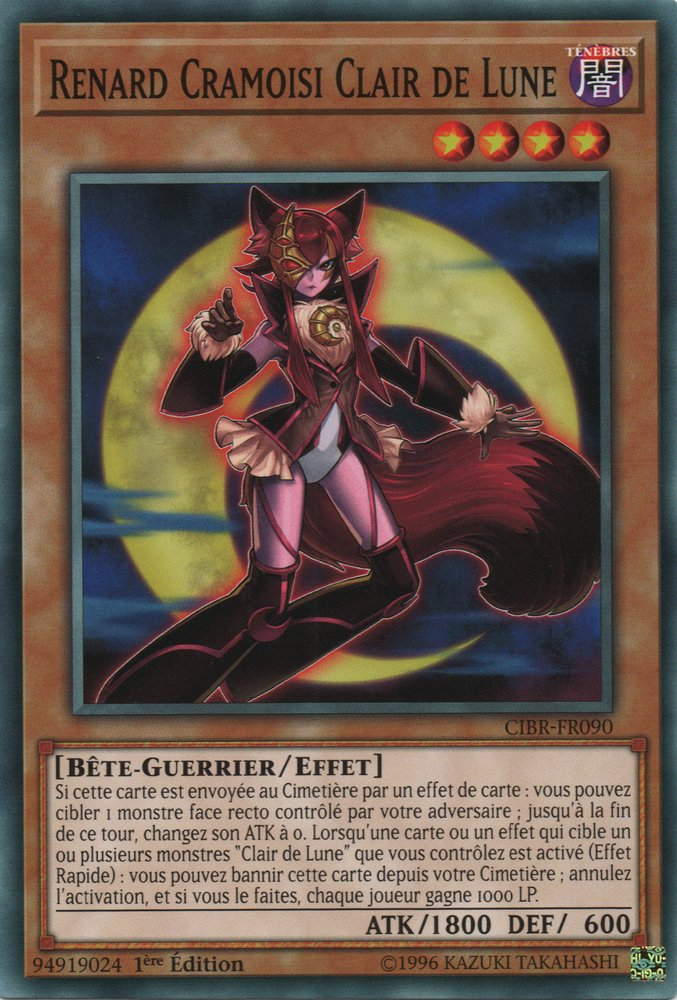

Serena sera-t-elle acceptée à la Duel Academia ? Et quel dortoir choisira-t-elle ? C'est ce que nous allons voir !
Yugioh: The Power of Four
Yusho et
Asuka
ont ramené leurs élèves dans le bâtiment principal de l'Académie pour leurs examens de qualification. Ils pouvaient voir qu'ils étaient excités d'être acceptés et
d'entrer dans ces nouveaux dortoirs. Ils étaient également heureux qu'ils commencent à mettre de côté leurs doutes sur Obelisk Blue. Enfin, tous sauf une. Eux, ainsi que
Rei remarquèrent
en jetant un coup d'oeil, une certaine fille aux cheveux indigo qui traînait derrière.
Serena
était plongée dans ses pensées, ne faisant pas particulièrement attention à la direction qu'elle prenait en tenant son
bracelet. Elle avait vraiment
hâte de commencer sa nouvelle vie à la Duel Academia,
comme ses camarades de classe. Elle n'avait aucun doute sur le fait qu'elle serait admise dans le dortoir qu'elle désirait. Mais ce n'était pas tout ce qu'elle avait
en tête. La jeune fille avait en fait deux choses qui la troublaient.
La première, et la plus importante, était son sentiment négatif sur le dortoir Obelisk Blue. Elle a écouté les garçons et les filles comparer leurs notes sur leurs
visites des bâtiments séparés qui regroupaient les étudiants les plus qualifiés de l'école. Apparemment, les filles ont vraiment aimé le design général du dortoir des
filles, la restauration gastronomique, et les bains à remous juste de l'autre côté. Les garçons, eux, étaient tout aussi impressionnés par l'autre bâtiment.
Serena elle-même ne voulait rien savoir de ce que le dortoir Obelisk Blue avait à offrir. Elle a absolument refusé d'avoir à faire à toute association avec eux si elle
pouvait l'éviter.
Serena: Je ne peux pas croire ce que j'entends. Comment ont-ils pu dire à quel point ils aimaient visiter ces maudits dortoirs ? Ont-ils oublié toute la douleurs qu'ont
causés
l'Obelisk Force à Academia
!? Ce dortoir porte le même nom qu'eux !
Serena voulut leur crier dessus et exiger de savoir pourquoi ils agissait comme ils le faisaient, comme si de rien ne s'était passé avant. Au lieu de cela, elle est restée silencieuse, gardant ses
pensées les plus intimes pour elle.
L'autre chose qui la dérangeait était quelque chose qu'elle n'avait jamais ressenti auparavant... quelque chose qu'elle ne pouvait pas vraiment nommer. Voir
Judai
commencer à passer du temps avec l'
Asuka Tenjoin
qu'il connaissait personnellement la faisait se sentir... déstabilisée. Ce n'était pas seulement cela, d'ailleurs. Elle a vu comment l'autre fille, Rei, s'est
pratiquement jetée sur Judai et semblait vouloir passer du temps avec lui aussi.
Serena: Rei... l'autre Asuka... pourquoi sont-elles si intéressées par Judai ? Pourquoi cela me dérange-t-il d'ailleurs ? Ça ne devrait pas me faire sentir comme ça !
Mais elle ressentait intensément ce sentiment étranger pour elle. Plus Serena s'imaginait l'autre Asuka ou Rei traînant avec Judai... plus elle avait envie de les faire se séparer de lui. Elle n'arrivait
pas à comprendre pourquoi.
Rei: Hey, Serena c'est ça ? Qu'est-ce qu'il y a ? Le stress de l'examen ?
Les pensées troublantes de Serena ont été interrompues par Rei, l'une des filles qu'elle ne voulait surtout pas voir près de Judai. Elle a alors essayé d'être nonchalante.
Serena: Pas de trac ici. J'ai bien l'intention de réussir ces tests, pas de panique.
Rei sourit devant son enthousiasme et sa détermination.
Rei: C'est bon à entendre. Je n'ai pas eu de problème dans mes examens d'entrée non plus.
Serena s'est alors souvenue d'une question sans réponse de tout à l'heure.
Serena: Tu n'as pas répondu à la question d'Asuka. Pourquoi portes-tu une veste qui ne correspond pas au dortoir dans lequel tu es ?
Cette dernière a demandé. Rei gloussa.
Rei: Oh, c'est juste un choix personnel. J'ai vu des étudiants déménager dans d'autres dortoirs, mais ces derniers gardaient leurs veste de leur
dortoir précédent. Même si je suis une Obelisk, je choisis toujours de porter la veste des Osiris parce que c'est là que j'ai commencé là. Et puis... chaque fois
que je la mets, je me souviens des moments que j'ai passés avec Judai-sama quand il était étudiant.
Rei a levé les yeux vers le ciel de façon rêveuse en disant cela. C'est une bonne chose, car à ce moment-là, Serena a serré les poings et les a légèrement secoués.
Serena: Pourquoi Asuka et toi aimez être avec Judai ?
Elle s'est lâchée avant de pouvoir garder ça pour elle. Rei se tourna vers elle avec surprise, surtout lorsqu'elle entendit un ton de colère dans la voix de la jeune fille.
Rei: Je ne sais pas pour Asuka - san
mais moi ? Hum, parce qu'il est incroyable et mignon ? Et puis, je crois que j'ai toujours eu un faible pour les hommes plus âgés. Mais pourquoi tu demandes ça ? Et
pourquoi tu l'as dis d'une façon comme si tu ne nous aimais pas ?
Demanda Rei, maintenant préoccupée par l'attitude de Serena à son égard. Serena s'arrêta de marcher et fit face à la fille plus âgée.
Serena: Ecoute Rei, je ne te déteste pas, ni l'Asuka de ce monde, vraiment. C'est juste que...
Elle a hésité un moment.
Serena: Je pense juste qu'aucune de vous ne devrait passer du temps avec lui, c'est tout.
Elle le lui dit, en étant maintenant un peu rouge. Rei a d'abord été stupéfaite. Une minute plus tard, elle s'est ensuite mise à rire.
Serena: Qu'est-ce qui il y a si drôle ? Elle a demandé.
Rei: Tu es jalouse, pas vrai ? Rei a deviné.
Serena: Jalouse ? Qu'est-ce que tu veux dire ? Serena a demandé, ne comprenant visiblement pas la déclaration de Rei.
Rei: Dis-moi Serena... Est-ce que Judai-sama est t-il ton premier coup de coeur ? Elle l'a taquiné.
Serena: Coup de coeur ? Je n'ai pas porter de coup au coeur à Judai. Je ne l'ai pas encore porter de coup en duel si c'est ce que tu demandes.
Répondit Serena. Rei la regarda comme si elle n'avait jamais rien vu de tel.
Rei: Wow...tu n'as vraiment aucune idée de ce dont je parle, n'est-ce pas ?
Demanda Rei avec incrédulité.
Serena: Il est est clair que non ! Où veux-tu en venir !?
Demanda Serena avec colère. Rei réfléchit un moment avant de poser une simple question.
Serena: Serena... As-tu déjà voulu être avec un garçon parce que tu ressentais de puissants sentiments pour lui. Des sentiments différents de ceux de ton
entourage habituel ?
La réponse de Serena l'a surprise.
Serena: Non. De plus, je dois me concentrer sur ces examens. Je ne peux pas perdre plus de temps avec des choses comme ça.
Serena a dit avant de finalement repartir, ayant assez entendu. Rei s'est tenu le front en soupirant.
Rei: Et bien, cette fille a beaucoup à apprendre en ce qui concerne les garçons.
Elle se dit à elle-même avant de la suivre.
Serena était de nouveau en pleine réflexion alors qu'elle arrivait à l'entrée principale de l'Académie. Aucune des choses que Rei lui a dites n'a eu de sens pour elle.
Serena: Jalouse ? Coup de coeur ? Qu'est-ce que Rei essayait de dire avec ces mots ?
Serena pensait cela tout en touchant inconsciemment le ruban attaché à ses cheveux. Elle essayait de s'éclaircir les idées lorsqu'elle a accidentellement heurté
quelqu'un qui venait de sortir de l'entrée principale. Serena et l'autre personne sont tombées au sol.
???: Oh, euh, désolé mademoiselle ! Vous allez bien ? Demanda l'étranger, ayant l'air poli et inquiet pour elle.
Serena: Oui, je vais bien. Mais c'est moi qui suis désolée. Je ne regardais pas où j'allais.
Serena a dit sans lever les yeux, se sentant légèrement gênée. Elle a alors vu une main se tendre vers elle.
???: Là, laissez-moi vous aidez à vous relever.
Serena regarda la main, puis son propriétaire. C'était un garçon d'environ sa taille, aux yeux gris, aux cheveux bleus clairs et portant une veste blanche avec des
ornements bleus. Il lui a fait un sourire amical en lui offrant sa main pour l'aider à se relever. Serena a ressenti une sorte de "choc" en croisant le regard du
garçon. Cela lui a presque coupé le souffle.
Normalement, Serena n'aurait pas accepté de l'aide aussi facilement. Elle pouvait facilement se relever toute seule. Mais cette fois-ci, sans comprendre pourquoi, elle
a pris la main du garçon et a permis à l'étranger de l'aider à se relever.
Serena: Merci. Tu n'es pas... en colère ou autre, n'est-ce pas ?
Elle demanda, regardant toujours le garçon dans les yeux, sans réaliser qu'elle commençait à rougir. L'étranger a émis un léger rire.
???: Non, pas du tout. Je m'appelle Sho Marufuji. Quel est le tien ?
Il a demandé. Serena s'est surprise à sourire en retour.
Serena: S-Serena.
Elle lui répondit, ne croyant pas qu'elle avait du mal à dire son propre nom. Cela ne lui était jamais arrivé auparavant.
Sho: Serena... c'est un joli prénom. Tu es nouvelle ici ?
Demande Sho, l'air sincère. Le sourire de Serena s'est élargi.
Serena: Merci... je suppose. Et oui, j'essaie de me qualifier pour entrer à Duel Academia.
Elle répondit timidement, ce qui ne lui ressemblait pas vraiment non plus.
Serena: Mais qu'est-ce qui ne va pas chez moi !?
Sho: J'espère que tu seras acceptée. C'est vraiment une école super.
Serena: Moi aussi.
Serena a répondu doucement. Ils se fixèrent l'un l'autre, sans dire un mot jusqu'à ce qu'ils entendent quelqu'un s'éclaircir la gorge. Ils ont touts deux
regardé pour voir Rei qui leur souriait.
Rei: Hey Sho-kun. Tu es de retour. Et... je vois que tu fais connaissance avec quelqu'un ici.
Elle a dit sournoisement en les montrant du doigt. C'est à ce moment que Serena a remarqué que Sho tenait toujours sa main.
Serena: Euh, Sho... peux-tu me lâcher la main maintenant ?
Elle a demandé, en essayant de ne pas paraître impolie. Sho a sursauté en voyant cela et a immédiatement lâché la main de la jeune fille.
Sho: Ah, désolé Serena ! Je... ne savais pas que j'étais...
Sho s'est excusé en essayant de s'expliquer et a détourné le regard, ayant l'air embarrassé lui-même.
Serena: Ne le sois pas. Je, hum, n'ai pas remarqué non plus. Bref, Rei... toi et Sho vous vous connaissez ?
Serena a demandé tout en ayant l'air encore plus rouge, essayant d'évacuer rapidement ce moment gênant de son esprit.
Rei: Oui, nous étions à l'académie ensemble aussi. Il a été diplômé à la fin de l'année dernière. L'un des meilleurs de sa classe, je dois dire.
Expliqua Rei. Sho souria maladroitement.
Sho: Je suppose que j'ai... bien réussi.
Il a dit timidement. Rei aimait regarder ces deux là comme ça. Dommage que ça n'ait pas duré longtemps.
Alex: Serena, viens ! Les examens écrits vont commencer !
Alex a appelé de l'intérieur. Serena a sursauté en se souvenant.
Serena: Oh oui ! Merci, j'arrive tout de suite !
La jeune fille s'est ensuite tournée vers Rei.
Serena: Je dois y aller maintenant ! A plus tard Rei ! Et Sho...
Serena a dit en le regardant dans les yeux une fois de plus.
Serena: Ravi de te rencontrer.
Elle lui dit rapidement avant de courir à l'intérieur pour rejoindre les autres étudiants et passer les examens.
Après avoir regardé Serena courir à l'intérieur, Sho a trouvé Rei en train de rire de lui.
Sho: Quoi ? Pourquoi est-ce que tu ris ?
Rei: Désolé, je n'ai pas pu m'en empêcher. Ce n'est pas tous les jours que j'ai l'occasion de voir deux nouveaux tourtereaux et de m'amuser par la même occasion.
Répondit Rei. Sho sursauta en secouant la tête et en agitant rapidement les mains.
Sho: Quoi !? Des tourtereaux ?! Non, non, non, non ! Tu as tout faux ! J'étais juste gentil avec elle, c'est tout !
Sho cria, maintenant rouge tomate. En vérité, bien qu'il ne veuille pas l'admettre, il a ressenti quelque chose lorsqu'il a pris la main de Serena. Il était
habituellement sans espoir quand il s'agissait de filles. Mais d'une certaine manière, il n'a pas eu de mal à lui parler. Rei a ri de ses tentatives pathétiques de le
nier.
Rei: Mais plus sérieusement, j'aime ton nouveau look. En abandonnant tes lunettes et en te faisant couper les cheveux, tu as l'air moins enfantin et plus... mature.
Sho a gloussa.
Sho: Oui, je porte des lentilles maintenant et je me suis fait couper les cheveux. Nii-san (trad: Nii-san = Grand Frère) a suggéré que je devrais essayer de
changer mon apparence pour que les gens me prennent plus au sérieux. Pour dire la vérité... j'aime bien ça.
Sho admettait.
Rei: C'est bon à entendre. Comment va ton frère, au fait ?
Demanda Rei. Il était sur le point de répondre quand ...
???: Hey ! Marufuji-senpai ! Qu'est-ce qu'un vieux dinosaure comme toi fait à l'école-don ?
Sho et Rei se retournèrent pour voir un jeune homme grand et musclé à la peau sombre et aux dreadlocks courir vers lui.
Disait Sho alors que le grand garçon le serrait dans ses bras. Son vieil ami et camarade de classe, Tyranno Kenzan, le lâcha et sourit.
Kenzan: Oui, c'est vrai ! Et regarde-toi, tu as mis à jour ton profil facial ! J'ai failli ne pas te reconnaître ! De plus, tu vois quelque chose de différent sur
ce T-Rex en face de toi-don ?
Il demanda, en se désignant lui-même. Sho le regarda et remarqua que quelque chose avait changé chez lui aussi.
Sho: Ta veste ! Tu es un Obelisk Blue maintenant !
Disait Sho, d'un air heureux. Kenzan acquiesca en montrant fièrement sa nouvelle veste bleue.
Kenzan: C'est vrai, je le suis ! Je viens d'apprendre la nouvelle et j'ai reçu cette nouvelle veste en prime ! Qu'est-ce que ça donne pour commencer ma dernière année-saurus ?
Kenzan: Félicitations Kenzan ! Tu l'as mérité ! Répondit Sho. Kenzan a gloussé.
Kenzan: Merci mon pote ! Bon, de toute façon...
Kenzan a alors agi un peu plus sérieusement.
Kenzan: Pourquoi es-tu de retour-don ? Il a demandé à nouveau.
Sho: Nii-san m'a envoyé ici pour repérer de nouveaux potentiels pour notre ligue de duel. Je m'attends à ce qu'il y ait au moins un ou deux candidats.
Sho a dit, il semblait plus confiant que ce dont Kenzen se souvenait. Cela semble l'exciter.
Kenzan: Ca a l'air génial-saurus !
Rei: Pareil pour moi. Alors, à propos de Ryo-sama. Comment va-t-il ?
Rei a commencé à demander à nouveau. À sa surprise et à celle de Kenzan, Sho a perdu son sourire et a détourné le regard.
Kenzan: Qu'est-ce qu'il y a ? Est-ce que ton frère va bien-saurus ?
Kenzan lui demanda, semblant maintenant préoccupé.
Sho: Désolé les gars, mais je ne peux pas discuter. Samejima - Kosho (trad: Samejima-Kôshô = Directeur Samejima en VF) m'a demandé d'aller trouver Judai et de m'assurer qu'il ne manque pas les examens de qualification de certains nouveaux étudiants.
Disait Sho, changeant de sujet.
Kenzan: Quoi !? Judai-aniki (trad: Aniki = Frérot) est de retour aussi !? Kenzan a crié de surprise.
Rei: Oui, il est là ! Je l'ai vu tout récemment ! Répondit Rei.
???: Ah oui ? Vraiment ?
Demanda une nouvelle voix.
Le trio se retourna pour voir une autre vielle connaissance qui venait d'entrer dans le bâtiment. Un jeune homme aux cheveux noirs sauvages, en vêtements sombres sous une
veste noire, s'avança vers le trio.
???: Alors, où est-il ? Où se cache mon vieux rival ?
Sho: Manjoume - kun ! Tu es de retour toi aussi ?
Disait Sho, surpris que l'ami et rival de Judai, Jun Manjoume, se soit également montré. Manjome renifla en souriant.
Manjoume: Bien sûr ! Félicitations pour ta nouvelle apparence, au fait. Je trouve personnellement qu'elle te va mieux que le look ringard que tu avais avant. Plus
important encore, si tu veux savoir, j'ai été choisi pour évaluer tous les nouveaux étudiants de la Duel Academia cette année ! Vous savez, être un modèle pour eux et les
motiver à suivre mes traces !
Sho, Kenzan, et Rei ont eu des sueurs froides. Ils doutaient qu'un des nouveaux élèves ne veuillent devenir le genre de personne qu'était Manjoume.
Sho: B-Bien sûr, comme tu le dis.
Sho a dit en souriant, essayant de paraître sincère.
Sho: Et en parlant de Judai, j'étais en fait sur le point de partir à sa recherche. Nous ne voulons pas qu'il manque les duels de qualification.
Manjoume: Bien. Quand tu trouveras Judai, dis-lui que Manjome Thunder est de retour et qu'il veut une revanche ! Sho grimaça.
Sho: Je... ne manquerai pas de le lui dire. Sho répondit nerveusement avant de sortir en courant. Manjome ricana.
Manjoume: J'ai hâte de le battre cette fois-ci. Il le disait, attendant avec impatience cette revanche.
Kenzan: Ouais, comme toutes les autres fois où tu t'es fait botter les fesses par aniki-saurus. Kenzan lui répondit en riant.
Manjoume: Surveille ton langage, Cervelle de Dino ! Manjome répliqua avec colère. Rei rit aussi. Ca l'avait manqué de voir ses vieux amis qui se chamaillaient comme ça.
Rei: Allez, les gars. Les duels de qualification vont bientôt commencer. Allons trouver des sièges.
Rei disait, conduisant les deux garçons vers l'arène principale de duel. Manjome se renfrogna tandis que Kenzen et lui se déplaçaient, bien que le Manjoume ait
félicité Kenzan d'être entré dans le dortoir où il se trouvait lui-même jadis.
Rei: Dis moi Manjoume, as-tu entendu quelque chose au sujet du frère de Sho ? Il n'a rien dit quand je lui ai demandé.
Demanda Rei.
Elle espérait qu'il serait au courant, vu qu'il faisant maintenant partie de la Ligue des Duelliste Professionnels. Manjome a levé un sourcil.
Manjoume: Ryo Marufuji
? L'ancien Kaiser (Kaiser = Empereur en VF) ? La dernière fois que j'en ai entendu parler, lui et son frère étaient en train de créer une ligue de duel
professionnel du style Cyber. Mais récemment, il a disparu de la circulation. Il n'y a pas eu de nouvelles de lui depuis des mois.
Rei et Kenzan étaient très inquiets pour leur ami et son frère.
En chemin, les deux gars ont rencontré un autre visage familier. Alors qu'elle sortait des toilettes pour femmes,
Asuka
a aperçu Rei avec deux hommes plus âgés. Elle a supposé qu'ils étaient des amis à elle.
Asuka (Arc-V): Hey Rei ! Tu vas à l'arène pour les matchs ? Elle demanda.
Avant que la jeune fille ne puisse répondre, Manjome a poussé Rei sur le côté et s'est incliné devant Asuka d'une manière très formelle.
Manjoume: Tenjoin-kun ! Ma chère ! J'ai le cœur qui bat à la chamade de te revoir ainsi ! Je suppose que cela signifie que tu as obtenu le poste de professeur que tu voulais ici ?
Demanda Manjome, souriant avec confiance tout en prenant sa main.
Asuka, de son côté, était complètement abasourdie. La jeune femme n'a fait que cligner des yeux en signe de confusion et a commencé à transpirer.
Asuka (Arc-V): Hein !? Uhh... Mais qu'est ce que ?
Asuka n'avait absolument aucune idée de qui était ce type ou de ce dont il parlait. En revanche, il semblait la connaître assez bien. Ou plutôt, l'autre elle.
Asuka (Arc-V): Oh non. Il pense que je suis l'Asuka de ce monde ! Et le pire, c'est qu'il semble être amoureux d'elle... ou plutôt, de moi ! Comment je peux m'en sortir !?
Elle a d'abord pensé à lui dire la vérité, mais sans Judai et l'autre Asuka autour d'elle, cela semblait impossible. Elle doutait également que Rei, la seule personne
présente qui savait, puisse faire mieux. La jeune femme ne voulait pas non plus provoquer un grand malentendu. Que devrait-elle faire ?
Heureusement, Rei a vu le regard suppliant dans les yeux d'Asuka et a agi rapidement.
Rei: Manjome, tu veux bien arrêter ? Nous devons aller à l'arène ou nous allons être en retard.
Elle a dit, prenant la main du gars (ce qui l'a ennuyé) et l'a conduit loin d'Asuka.
Asuka (Arc-V): Merci. Asuka a chuchoté avec gratitude.
Rei: Pas de problème. Rei a dit avec un clin d'oeil.
Kenzan: Tu vas bien, Asuka-senpai ? Ça ne te ressemble pas d'être muette comme ça-saurus. Kenzan a demandé en rattrapant le trio.
Asuka (Arc-V): O-Oui, je vais bien. J'ai juste été prise au dépourvu, c'est tout. Asuka a dit, prenant un rire forçé.
Rei: Ouais Kenzan, ça arrive à tout le monde. Ajoute Rei.
Kenzan haussa les épaules, semblant accepter la réponse. Le soulagement des filles fut de courte durée, cependant, car Manjome réapparut instantanément et enroula son bras autour de celui d'Asuka.
Manjoume: Quand nous arriverons à l'arène, tu pourras t'asseoir juste à côté de moi !
Il le formulait comme si c'était le plus grand honneur du monde. Les deux filles soupirèrent, exaspérées.
Chapitre 13: Reticence face aux "Obelisk". Une rencontre qui peut tout changer.
Pendant ce temps, l'Asuka
que Manjome et Kenzan connaissaient se tenait à côté de Judai, ces deux-là regardaient en direction de la mer. Ils étaient tous deux appuyés sur une rampe derrière le
dortoir Osiris Red. En le rejoignant après avoir quitté Yusho et Serena, Asuka s'est changée et a remplacé ses vêtements de travail. Elle portait maintenant un
uniforme scolaire semblable à celui d'Emi Ayukawa,
mais un peu moins révélateur. Sa veste était sans manches et avait une chemise bleu clair en dessous et une jupe bleue.
Pendant qu'ils se regardent, Judai la mettait au courant de sa récente mission. Comme Samejima, chaque fait l'a stupéfaite... y compris le fait qu'une autre version d'elle même
de la Dimension de la Fusion se soit échappée ici. Et que la fille à qui elle a parler, Serena, était au centre de tout.
Asuka (GX): Tout cela semble incroyable, Judai. Nous aussi, nous avons vécu des aventures aussi folles lorsque nous étions tous deux encore à l'Académie. Mais pour être
honnête... c'est toi qui vis les aventures les plus folles quand tu es seul.
Asuka s'exclama, faisant rire Judai.
Judai: Ma vie a toujours été folle, Asuka. Et pour ne rien arrangé, elle devient de plus en plus folle ces derniers temps.
Lui et Asuka ont ri ensemble. La fille s'est sentie plus qu'heureuse d'être à nouveau avec Judai. Elle ne l'avait pas vu ou entendu parlé de lui depuis leur remise de
diplôme. Cela semblait être une éternité. Sa gaieté, son attitude insouciante, son sourire chaleureux... toutes les choses qu'elle aimait chez lui l'avaient vraiment
manqué. Si seulement elle avait eu le courage de lui dire cette nuit-là...
Asuka (GX): Alors... cette autre moi de ce monde lointain... Comment est-elle ?
Asuka a demandé après une minute, semblant légèrement nerveuse. Elle commençait à s'inquiéter si son autre "elle" avait aussi développé des sentiments pour Judai. Ce dernier souria.
Judai: En fait, elle n'est pas si différente de toi.
Il lui répondit, la faisant se sentir plus mal à l'aise, jusqu'à ce que...
Judai: Il y a une grande différence entre vous deux, cependant.
Asuka (GX): Qu'est-ce que c'est ? Asuka a demandé. Judai a continué à lui sourire.
Juadi: Elle n'est pas allée à l'école avec moi. Asuka a souri en retour, et son cœur a battu un peu plus vite.
Asuka (GX): C'est bon à savoir.
La jeune femme avait commencé à réfléchir à la manière dont elle pourrait lui exprimer ses sentiments. Elle ne voulait pas tout gâcher.
Judai: Alors, quoi de neuf pour toi ? Yusho me dit que tu travailles ici maintenant ?
Judai a demandé, une minute après, ramenant Asuka à la réalité. Elle a rapidement hoché la tête
Asuka (GX): C'est exact. Je travaille maintenant aux côtés d'Emi-senseï pour surveiller les filles des Obelisk Blue et ses classes. Je sais que c'est beaucoup de
travail, mais je suis certaine de pouvoir le faire.
Elle le disait avec détermination. Judai acquiesca.
Judai: C'est génial. Je sais que tu vas réussir. Pour ma part, je crois fermement en toi. Tu es l'une des filles les plus fortes que je connaisse... non, oublie
ça... disons "la" fille la plus forte que je connaisse.
Il a dit. Asuka détourna alors le regard vers l'océan, commençant à rougir.
Asuka (GX): Merci Judai. Cela signifie beaucoup pour moi... surtout venant de toi.
Elle disait doucement.
La jeune fille ferma les yeux et sourit en sentant la brise de l'océan frapper son visage et souffler dans ses longs cheveux. C'était vraiment bon. Ce qui était encore
mieux, c'est que Judai était là pour en profiter avec elle.
Judai: Bien sûr, quand tu veux.
Disait l'ancien élève d'Osiris Red en profitant également de la vue. Asuka a ensuite jeté un coup d'oeil à Judai.
Elle a ensuite repensé à leur premier duel en première année. Elle le connaissait à peine à l'époque, mais elle était déjà fascinée par ses talents de duelliste. Elle
était stupéfaite qu'il l'ait terrassée sans trop de problèmes, même si elle était une excellente élève. Au fil des années, son admiration et ses sentiments pour Judai
ont grandi. Et maintenant, ils sont de nouveau ensemble dans cette Académie où leur amitié a commencé.
Asuka (GX): Il est peut-être temps que quelque chose d'autre commence ici...
Pensa cette dernière.
Après un autre moment, Judai a commencé à s'éloigner.
Judai: Eh bien, je pense que nous devrions nous diriger vers le bâtiment principal de l'Académie. Serena et les autres vont bientôt se battre en duel pour entrer
dans l'école. J'ai vraiment hâte que tu la voies en action, Asuka ! Elle est forte et...
Judai s'est arrêté quand il a réalisé qu'Asuka ne marchait pas avec lui. Il s'est retourné pour la voir debout à l'endroit où il l'avait laissée.
Judai: Asuka ? Tu viens ?
Asuka s'est retournée pour faire face à Judai, qui a remarqué qu'elle avait maintenant l'air vraiment sérieux.
Asuka (GX): Judai, je dois te dire quelque chose avant que nous partions. Quelque chose... que j'aurais dû dire il y a longtemps.
Judai: Comme quoi ? Judai a demandé, ne sachant pas ce qu'il était sur le point d'entendre. Asuka a pris une seconde avant de reprendre la parole.
Asuka (GX): Tu te souviens que nous avons parlé tous les deux la nuit après avoir gagné le tournoi Tag Duel ? Elle a demandé.
Judai acquiesce. Il se souvenait de tout à ce sujet.
Judai: Oui, tu m'as dit que tous tes doutes étaient levées et que tu étais heureuse de m'avoir rencontré.
Il ne voyait pas vraiment ce que cela avait à voir avec quoi que ce soit. Asuka a alors continué, sachant ce qu'elle était sur le point de risquer.
Asuka (GX): J'ai dit tout ça. Le fait est que... je voulais te dire autre chose cette nuit-là. Seulement, je ne pouvais pas me résoudre à le dire. J'avais trop peur.
Elle a hésité, l'air nerveux pendant un moment. Après avoir retrouvé son courage, elle a continué.
Asuka (GX): Mais dès que je t'ai revu aujourd'hui, depuis que j'ai obtenu mon diplôme... j'ai réalisé à quel point tu es important pour moi. Je ne peux pas laisser
passer une autre occasion de te le dire.
Elle disait fermement.
Judai: Me dire quoi, Asuka ?
Demanda Judai, l'air vraiment confus.
Asuka s'est alors approchée de lui, sans détourner le regard. Quand elle était juste en face de lui, elle a pris ses mains et les a tenues dans les siennes. Judai a
été surpris par cela. Mais ce qu'il a entendu ensuite l'a vraiment pris au dépourvu.
Asuka (GX): Je t'aime, Yuki Judai.
Le jeune homme, qui a affronté de nombreux ennemis dangereux et sauvé le monde entier du désastre plus d'une fois, est resté pétrifié. Judai fixait Asuka avec des yeux
incrédules, sa mâchoire était tombée. Il ne savait pas quoi répondre à cela ; le gars était vraiment sans mots. Asuka attendit qu'il réponde à sa confession,
ne voulant pas le brusquer. Judai a finalement retrouvé sa voix après un long silence.
Judai: Tu... m'aimes ? Vraiment ? Il a demandé doucement.
Asuka (GX): Vraiment. Asuka répondit tout aussi doucement, en souriant. Judai laissa ce qu'il venait d'entendre s'imprégner.
Judai: Je ne peux pas le croire. Asuka... m'aime. Elle est amoureuse... de moi ! De toutes les choses que je m'attendais à ce qu'elle dise, c'était définitivement
en bas de la liste !
Il a ensuite pensé à tous les moments qu'il a passés avec elle. Les moments où il a aimé être avec elle... à part les mauvais moments, comme quand elle était sous
contrôle mental et qu'elle était en colère contre lui. Il l'avait toujours considérée comme une très bonne amie dans le passé. Mais maintenant, sachant ce qu'elle
ressentait vraiment pour lui...
Judai: Elle a dû tout risquer pour me dire ça. Comment diable puis-je faire quelque chose maintenant. A moins que...
Il a alors tenu les mains d'Asuka plus fermement.
Judai: Je t'aime aussi, Asuka Tenjoin.
Répondit enfin Judai, en affichant son sourire le plus chaleureux. Asuka sourit encore plus alors qu'elle commençait à avoir des larmes. Elle avait espéré l'entendre
dire cela, et quand il l'a fait, elle s'est sentie plus heureuse que jamais. Puis, Judai et Asuka se sont penchés, ont fermé les yeux et ont partagé leur premier
baiser. Pendant qu'ils s'embrassaient, les larmes d'Asuka coulaient sur ses joues. Le duo s'entourent de leurs bras et se rapprochent, appréciant le
contact. Le monde semblait s'être arrêté autour d'eux, car rien ne comptait si ce n'est que l'attente en valait la peine. Judai et Asuka ont ressenti l'amour de
l'autre à travers leur baiser, et ils n'ont jamais voulu que cela se termine.
Finalement, ils l'ont terminé pour prendre l'air. Les deux respirent lourdement après leur intense et passionnée baiser. Ils se sont regardés dans les
yeux, se voyant non plus comme de simples amis... mais comme quelque chose de plus.
Judai et Asuka: Wow. Ils ont dit en même temps.
Sho: C'est ce que je dirais aussi.
Judai et Asuka se sont rapidement retournés pour voir Sho, fixant le nouveau couple avec stupéfaction. Ils ont tous les deux viré au rouge.
Judai: S-Sho !? C'est vraiment toi !? Judai cria fort, à la fois par gêne d'avoir été surpris et par surprise de voir son meilleur ami si différent.
Sho: Oui, Aniki, bien sûr que c'est moi ! J'allais te demander si les choses avaient changé pour toi aussi, mais je suppose que je n'en ai pas besoin de demander.
Répondit Sho avec un léger ricanement. Judai ne répondit pas, bien qu'il ne croisait pas vraiment le regard de son meilleur ami.
Asuka (GX): Sho, depuis combien de temps tu nous observes !? Asuka a exigé, se sentant légèrement en colère ainsi qu'embarrassée.
Sho: Euh... je suis venu ici juste quand vous avez dit le mot e, "A", et que vous avez commencé à vous embrasser. Répondit ce dernier.
Judai et Asuka grimacèrent en pensant que Sho avait été témoin de leur moment le plus privé.
Sho: Honnêtement, je me demandais si vous alliez vous mettre ensemble un jour. Sho ajouta.
Judai: Sho, peux-tu garder ça privé pour le moment, s'il te plaît ? Judai a demandé frénétiquement.
Asuka (GX): Nous préférons le dire aux autres nous-mêmes. Asuka ajouta. Sho a instantanément accepté.
Sho: Bien sûr, absolument.
Judai: Au fait, ce n'est pas que je ne sois pas heureux de te revoir mon pote, mais pourquoi es-tu de retour ici ? Demanda Judai, se calmant enfin. Sho se souvint alors.
Sho: Oh oui ! Les duels de qualification sont sur le point de commencer et on m'a demandé de m'assurer que tu arrives à temps ! Je me suis dit que je te trouverais
ici... mais je ne m'attendais pas à ce qu'Asuka soit là aussi.
Judai: Les duels ! Nous devons y aller maintenant ! Judai s'exclama, alors qu'il se souvenait aussi. Asuka a également compris.
Asuka (GX): J'espère que nous ne serons pas en retard !
Elle a dit que le trio courait alors vers le bâtiment principal où se trouvait l'arène de duel. Judai a pris la main d'Asuka et l'a tenu le long du chemin.
Judai: Quelque chose d'autre que je devrais savoir ? Demanda Judai tout en courant. Sho a gloussé nerveusement.
Sho: En fait, Manjome-kun est ici aussi et veut une revanche avec toi ! Judai a réellement ri cette fois.
Judai: Je vois, ça lui ressemble bien ! Disait Judai à Asuka, qui sourit en retour.
Elle imaginait bien la réaction de Manjome lorsqu'il découvrirait qu'elle était maintenant la petite amie de Judai... et avait aussi envie de rire.
Serena se tenait appuyée contre le mur d'une petite pièce, attendant son tour. Alex et les autres élèves étaient debout ou assis à proximité, l'air nerveux. Les
examens écrits ont duré environ une heure, et maintenant ils attendent leurs duels de qualification. Ces matchs à venir décideront des dortoirs dans lesquels ils
seront logés dans un futur proche.
Ils n'ont eu aucun problème avec les examens écrits. Serena se sentait particulièrement satisfaite, sachant qu'elle avait trouvé les bonnes réponses à toutes les
questions. Elle n'avait aucun doute qu'elle mettrait en pièces quiconque la testerait.
Serena: Ils ne savent pas encore à qui ils ont affaire. Pensa la jeune fille en souriant.
De là où ils attendaient, on pouvait voir une immense arène de duel.
Elle était entourée de plusieurs rangées de sièges pour les spectateurs qui venaient voir. Elle regardait les sièges qui se remplissaient lentement. Elle a d'abord vu
Directeur Samejima, une femme agee et dodue
assise à sa droite, et Yusho Sakaki à sa gauche.
Elle a également vu un homme à l'allure étrange (elle a supposé que c'était un homme) assis à la droite de Yusho. Il portait un uniforme formel bleu foncé et avait des
cheveux blonds, courts devant mais avec une longue queue de cheval derrière. La chose qui a fait douter Serena de son sexe est que le gars portait du rouge à lèvres.
Serena s'est demandée si c'était l'homme dont Judai lui avait parlé, le responsable du dortoir des garçons chez les Obelisk Bleu,
Cronos de Medici.
À côté de lui, de l'autre côté, se trouvait une femme aux cheveux roux foncé et au rouge à lèvres rouge. Ce devait être
Emi Ayukawa,
la personne qui supervisait le dortoir des filles. Elle portait une veste bleue et blanche avec un maillot de corps rose et des boucles d'oreilles.
Ensuite, Serena a vu Rei et Asuka
prendre place à l'avant. Elle savait qu'il s'agissait de l'Asuka avec laquelle elle s'était liée d'amitié car elle savait que "l'autre" était avec Judai, qui ne
faisait pas partie du groupe. Il y avait aussi un gars habillé en noir assis à côté d'Asuka, mais elle semblait très mal à l'aise pour une raison quelconque. Un garçon
à la peau sombre et aux dreadlocks était assis à côté de Rei. Serena a supposé que les deux gars étaient des amis d'école de la jeune fille.
Elle a essayé de voir si ce gars, Sho, était aussi dans le public. Cependant, elle ne l'a vu nulle part. Cela l'a déçue d'une certaine façon. Elle se dit qu'il devait
être en retard et qu'il arriverait à temps pour son match. Elle ne comprenait toujours pas pourquoi elle s'était comportée si bêtement devant lui. Cela ne s'était
jamais produit avec aucun des garçons qu'elle avait rencontrés dans le passé, y compris Judai. Maintenant, à chaque fois qu'elle pensait à Sho Marufuji, elle pouvait
se sentir devenir plus chaude que la normale et sentait son cœur s'emballer. Elle secoua la tête, essayant de faire le vide dans sa tête pour son duel. Elle ne pouvait
pas se permettre d'être distraite.
Puis, à sa grande joie, Serena a vu Judai entrer en courant et s'asseoir quelques rangs au-dessus de l'endroit où Rei et les autres étaient assis. Malheureusement,
elle a aussi remarqué qu'il n'était pas venu seul. A sa grande contrariété, l'
Asuka de ce monde est arrivée avec Judai et s'est
assise à côté de lui. Serena n'a pas manqué de remarquer son changement de vêtements, lui donnant une apparence similaire à Emi. La voir encore avec lui lui fit bouillir son sang.
Serena: Tu te moques de moi ? Pourquoi cette Asuka s'accroche encore à lui !? Pourquoi ne peut-elle pas le laisser tranquille !?
Serena ne savait toujours pas pourquoi le fait de voir Judai avec l'autre Asuka l'énervait autant. Elle a ressenti la même chose quand Rei est venue le voir.
Serena: Qu'est-ce qui se passait avec ces deux-là ? Qu'ont-ils en commun pour que Judai passe du temps avec eux ?
Alors qu'elle réfléchissait à cette question, elle s'est mise à tripoter son ruban de cheveux. Puis une réponse lui est venue.
Serena: Est-ce que ça pourrait être... ? Elle s'est demandée.
Après environ 10 minutes supplémentaires, le Principal Samejima s'est levé et a attiré l'attention de tous.
Samejima: Mesdames et messieurs ! Professeurs et élèves ! Bienvenue à a Duel Academia ! Cette année promet d'avoir un bon nombre de Duellistes talentueux et j'espère
les voir grandir au cours de leurs 3 années d'éducation ! Sans plus attendre, commençons les duels de qualification ! Tout d'abord, le participant numéro 001 ! Entrez
dans l'arène maintenant !
Serena a souri. C'était son numéro, ce qui signifiait que son match serait le premier.
Alex: Bonne chance Serena !
Alex encouragea. Les autres élèves lui ont aussi donné leur espoir qu'elle s'en sorte bien. La jeune fille acquiesce avant de sortir à l'air libre, mettant son disque de
duel au passage. Ce serait aussi le moment d'essayer sa tactique pour que Judai lui prête plus d'attention qu'aux autres filles...
Au même moment, Rei et Asuka ont été très heureux de voir qui est sorti en premier.
Rei: Regardez ! Serena est la première à passer ! Rei a dit avec excitation.
Asuka (ARc-V): Cela devrait bien se passer pour elle. Asuka a dit, impatiente de voir comment Serena allait se comporter dans son match.
Kenzan: Vous deux, vous connaissez cette fille-saurus ? Kenzan a demandé. Les deux filles ont hoché la tête.
Asuka (Arc-V): Nous l'avons rencontrée récemment, Kenzan. C'est une bonne fille avec pas mal de talent.
Asuka répondit, ayant été témoin des compétences de Serena avant contre Yusho.
Manjoume: Si tu l'apprécies autant, je ne doute pas que je le ferai aussi. Manjome a dit, ne remarquant pas le regard d'Asuka qui était mal à l'aise d'être assise avec lui
Quelques rangs au-dessus d'eux, Judai et Asuka de son monde ont souri.
Judai: Super ! Serena fait son premier duel ! Tu vas adorer ça ! Il a dit à sa nouvelle petite amie avec beaucoup d'enthousiasme.
Asuka (GX): Je suis impatiente de voir ce qu'elle peut faire. Répondit Asuka.
Elle a ensuite regardé autour d'elle, mais n'a pas vu leur ami.
Asuka (GX): Où est Sho ? Ne devrait-il pas être ici à regarder avec nous ? Judai haussa les épaules.
Judai: Il a dit qu'il avait quelque chose à faire avant de venir voir les matchs. J'espère qu'il ne manquera pas le duel de Serena cependant.
Judai a dit, ne voulant pas que son meilleur ami passe à côté. À ce moment-là, il a vu Serena faire quelque chose qui l'a surpris.
Alors qu'elle entrait dans l'arène de duel, Serena a retiré son ruban et a laissé ses cheveux tomber librement juste derrière ses épaules.
Elle a ensuite passé une main dans ses cheveux d'une manière très visible. La jeune fille a souri avec confiance lorsqu'elle s'est arrêtée à son extrémité et a attendu
que son adversaire apparaisse, les bras croisés.
Judai: Pourquoi Serena a laissé ses cheveux détachés comme ça ?
Judai a demandé, ne comprenant pas. Ce n'était pas quelque chose qu'elle faisait habituellement juste avant un duel. Asuka était également confuse. Elle n'a pas
compris non plus.
Dans l'arène, Serena était sûre que Judai avait vu son nouveau look. Elle a laissé ses cheveux libres parce qu'elle a vu un point commun entre Rei et l'autre Asuka:
elles avaient toutes les deux de longs cheveux, sans rien pour les attacher comme un ruban ou des épingles à cheveux.
Serena: Peut-être que maintenant il fera plus attention à moi pendant mon duel. Bien, à présent... quel que soit mon adversaire... Je vais l'écraser !
Elle pensait en attendant. Elle n'a pas eu à attendre longtemps, car elle a pu voir quelqu'un sortir de l'autre côté de l'arène.
Lorsque le duelliste adverse a été révélé, Serena (ainsi que la plupart des spectateurs) ont été choquée. Le duelliste qui était venu tester Serena... était le garçon
qu'elle avait croisé plus tôt. C'était Sho Marufuji.
Serena: Toi !? Tu es mon adversaire !? Serena a demandé, complètement abasourdie. Sho semblait lui-même surpris.
Sho: Oui, on dirait bien. Samejima-kosho m'a dit d'affronter en duel le premier des qualifiés... mais il n'a pas préciser que ce serait toi.
Il a dit. Serena pouvait voir qu'il était honnête et ne s'attendait vraiment pas à cela.
Elle n'était pas la seule à être surprise. Judai, son Asuka, et tous les autres ont eu la même réaction.
Judai: Qu'est-ce que... ? Serena va affronter Sho en duel !? Pas possible ! Judai s'est exclamé.
Asuka (GX): Je ne peux pas le croire non plus ! Sho n'a rien dit à ce sujet ! Asuka a dit d'un air incrédule.
Kenzan: Marufuji-senpai se bat en duel avec la nouvelle fille ? C'est un choc-saurus ! Kenzan a dit, abasourdi.
Manjoume: Je commence à avoir de la peine pour la gamine maintenant. Manjome a ajouté.
Asuka (Arc-V): Je suis sûre qu'elle s'en sortira bien. Elle peut gagner. L'Asuka assise avec eux a répondu.
Asuka (Arc-V): Hm ? Quoi ? Qu'est ce qu'il y a ? Elle demanda, voyant les expressions ébahies des deux gars.
Kenzan: As-tu oublié à quel point Marufuji-senpai est devenu un dinosaure évolué-don ? Kenzan a demandé.
Manjoume: Allez, n'as tu pas vu toutes les fois où il s'est battu en duel ? De plus, c'est le petit frère du Kaiser. Comment peux-tu penser que cette jeune fille a une
chance de le battre ?
Manjome l'interrogea, faisant transpirer nerveusement Asuka qui commença à bégayer.
Asuka (Arc-V): Oh, et bien, j'ai...euh... ah... regardé Serena se battre en duel il n'y a pas longtemps et, hum... j'ai vu à quel point elle était forte ! C'est
pourquoi je pense que Sho-kun aura du mal à la maîtriser !
Elle dit rapidement, bien qu'elle ne sache rien de cette personne surnomé "Kaiser" ou de ce jeune frère qui était sur le point d'affronter Serena. Du moins, elle ne savait rien du
Kaiser de "ce" monde. Manjome continuait de la dévisager, mais pas parce qu'il était encore épris d'elle.
Manjoume: Qu'est-ce qui se passe avec toi Tenjoin-kun ? Tu n'as pas l'air d'être toi-même.
Il a dit. Asuka détourna le regard qu'il lui lançait, ses dents apparaissant.
Kenzan: Je suis d'accord. Il y a quelque chose de différent chez toi-don.
Kenzan a dit, semblant également soupçonneux. Rei était sur le point de prendre la défense d'Asuka quand...
Manjoume: Attends... Je sais pourquoi tu agis de cette façon. Disait soudainement Manjome. Asuka et Rei ont commencé à paniquer.
Rei et Asuka (Arc-V): Vr-vraiment ? Elles ont toutes deux dit en même temps.
Manjome hocha la tête, semblant maintenant confiant qu'il avait la réponse.
Kenzan: Tu en es sûr-don ? Demanda Kenzan.
Manjoume: C'est tellement évident. Il a fait une pause avant de donner son hypothèse, regardant Asuka dans les yeux.
Manjoume: Me retrouver à nouveau si longtemps après avoir été diplômée t'a fait voir à quel point je suis devenu un beau gosse. Tes sentiments pour moi ont
finalement commencé à s'épanouir... et tu ne sais pas comment les exprimer. C'est pour ça que tu n'as pas les idées claires et que tu n'agis pas comme tu étais avant.
Rei et Kenzan ont grogné, mais Asuka a fixé Manjome avec des yeux aussi larges que des soucoupes.
Asuka (Arc-V): Bon sang, ce type est vraiment imbu de sa personne. J'ai vraiment de la peine pour l'Asuka de ce monde.
En réponse, Asuka a émis un rire nerveux.
Manjome a souri en regardant l'arène, pensant qu'il avait trouvé le problème de comportement d'Asuka.
Dans l'arène, Serena se sentait en conflit. Elle voulait aplatir la personne qui la mettait à l'épreuve pour prouver sa force, mais voir que c'était Sho, le gars qui
la faisait se sentir tout à fait différente de son moi habituel... la faisait hésiter à le faire. Elle voulait aussi montrer à Judai qu'elle était plus digne de son
attention que les autres filles. Impressionner Judai, ou y aller doucement avec Sho ? Que doit-elle faire ?
Sho avait aussi des pensées similaires. Au moment où il a vu que Serena serait la première à essayer de se qualifier, il a presque eu envie de ne pas y aller à fond. Il ne
voulait pas qu'elle ait eu l'air mal en point devant tout le monde. Il l'aimait vraiment. Cependant, le Principal Samejima lui a dit de tester le premier nouvel élève en
montrant toutes ses compétences de duelliste. Sho a accepté, et maintenant il doit le faire.
Sho: Serena, je sais que tu dois être nerveuse, mais ne le sois pas ! Je veux que tu donnes le meilleur de toi-même ! Alors ne te retiens pas !
Sho l'encouragea en activant son disque de duel. Ses mots ont fait sortir Serena de son incertitude et lui ont fait retrouver son esprit de combat.
Serena: Tu veux le meilleur moi même ? Dans ce cas, tu l'auras voulu, Sho Marufuji !
Elle répondit bruyamment, son disque de duel s'activant également. Pour le moment, à cet instant, tout ce qu'elle voulait était de montrer sa force à toutes les
personnes présentes. C'était son heure, et elle voulait prouver qu'elle avait ce qu'il fallait pour entrer à la Duel Academia.
“DUEL !”
(Sho: 4000 LP)(Serena: 4000 LP)
Sho: Je commence en premier. C'est mon tour.Draw !
Une perceuse géante rose avec des yeux se tenait face à Serena, qui était étonnée par l'invocation.
Sho: Je pose 2 cartes face cachées et je termine mon tour.
Déclara Sho, en posant les cartes restantes dans sa main.
Serena: Un monstre de 3000 points d'attaque dès le départ !? Elle a dit avec une grande surprise.
Kenzan: Marufuji-senpai n'y va vraiment pas de main morte avec elle, n'est-ce pas-saurus ?
Commenta Kenzan. Rei et Asuka ont toutes les deux secoué leurs têtes.
Judai: Sho est fort, aucun doute là-dessus. Mais Serena ne se laissera pas faire non plus. Elle va lui donner du fil à retordre.
Judai expliqua, semblant excité.
Asuka (GX): Je me demande comment elle va gérer ça ? Demanda son Asuka.
Sho: Très bien Serena, à toi de jouer ! Disait Sho.
Bien que surprise d'être confrontée à un Monstre puissant dès le départ, Serena l'accueillit en fait avec un sourire.
Serena: Impressionnant, mais je peux gérer cela ! C'est mon tour !Draw !
Dans sa main, Serena voyait un moyen non seulement d'abattre le Monstre Fusion de Sho, mais aussi de gagner dès son premier tour. Cela ne manquerait pas
d'impressionner Judai et Sho.
Serena: Je joue également la carte magie
“Yugo ”
pour faire fusionner
“Moonlight Blue Cat ”
avec
“Moonlight Crimson Fox ”
se trouvant dans ma main ! Chat rôdant dans la nuit bleue ! Renard écarlate baignée par la lune ! Unissez-vous dans le tourbillon de l'attraction lunaire et renaissez
accompagnés d'un nouveau pouvoir ! Yūgō Shōkan ! Montre-toi, magnifique bête dansant au clair de lune !
“Moonlight Cat Dancer ”
!
Le meilleur monstre de Serena est maintenant apparu, prêt à trancher son ennemi.
Asuka (GX): Elle a bon goût en matière de monstres.
Disait l'Asuka assise à côté de Judai, qui hocha la tête en signe d'accord.
Sho: J'aime bien ton Monstre, mais 2400 Points d'Attaque ne seront pas suffisants pour vaincre mon
“Jumbo Drill ”
. Informa Sho, mais Serena a souri.
Serena: En fait, mon monstre a toute la puissance dont il a besoin.
Elle a déclaré, rendant confus son adversaire.
Sho: Qu'est-ce qu'elle veut dire par là ? Est-ce que son Monstre Fusion a un effet pour le rendre plus fort ?
Se demandait Sho. Il ne pouvait pas avoir plus tort.
Serena: J'active l'effet de
“Moonlight Crimson Fox ”
! Lorsqu'elle est envoyé au Cimetière par un effet de carte, je peux choisir un monstre sur ton Terrain et réduire ses Points d'Attaque à 0 jusqu'à la End Phase ! Ton
“Jumbo Drill ”
ne peut plus faire face à mon monstre maintenant !
Déclara fièrement Serena.
Sho: Quoi !?
Sho hurla de surprise alors que son Monstre devient impuissant.
(Super Vehicroid Jumbo Drill: 3000 ATK -> 0 ATK)
Kenzan: Oh-oh, la nouvelle vient de faire un mouvement assez malin-saurus.
Manjoume: On dirait bien que oui. Mais Sho n'est pas le genre de duelliste à perdre face à une débutante.
Il avait raison, car Sho était préparé à ce genre de situation.
Serena: Es-tu prêt à perdre ? Ensuite, je vais...
Serena commença sa phrase, mais n'a pas pu finir.
Sho: Ton attaque ne marchera pas ! J'active ma carte Piège,
“Shinnyu Kinshi! No Entry!! ”
! Cela fait passez tous tes monstres du mode attaque en mode défense.De plus, elle a un autre effet. Tu dois te défausser d'une carte que tu as en main !
Annonça Sho, révélant son Piège.
Serena grogna alors que son meilleur monstre était maintenant en mode défense. Elle était sur le point d'invoquer un autre monstre pour pouvoir utiliser l'effet de
“Cat Dancer ”,
mais Sho a annulé ce plan. Cependant, elle n'était pas trop contrariée par le défaussement d'une carte. Car la carte qu'elle avait choisie lui donnait une autre chance
de victoire...
Serena: Bien joué, mais tu m'as en fait donné une autre opportunité pour te vaincre.
Elle a dit, souriant à nouveau.
Sho: Comment ? Sho a demandé, curieux.
Tous les autres se demandaient également ce que la nouvelle fille voulait dire.
Rei: Cela devrait être intéressant.
Asuka (Arc-V): Oh, ça le sera. L'Asuka à côté d'elle affirma sans aucun doute.
Serena: La carte que tu m'as fait défausser était
“Moonlight Yellow Marten ”
, et comme elle a été envoyée au Cimetière par un effet de carte, je peux prendre une carte Magie ou Piège "Moonlight" de mon Deck et l'ajouter à ma main ! Je choisis cette carte:
“Moonlight Fusion ”
!
Elle dit, révélant une nouvelle carte Magie dans sa main.
Serena: Et sans plus tarder, j'active la carte que j'ai prise à l'instant,
“Moonlight Fusion ”
! Cela me permet de faire une Invocation Fusion d'un monstre Fusion "Moonlight" en utilisant des Monstres sur mon Terrain ou dans ma main ! Cependant, elle a un autre
avantage... que tu m'as également fourni.
Expliqua Serena.
Sho: Que... Qu'est ce que je t'ai fournis ? Demanda Sho, qui commençait à se sentir un peu nerveux.
Serena: Puisque tu possède un Monstre qui a été Invoqué Spécialement depuis l'Extra Deck sur ton Terrain, je peux aussi choisir un Monstre "Moonlight" se trouvant dans mon
deck ou mon Extra Deck et l'utilisé comme matériel de Fusion ! Je fais fusionner
“Moonlight Cat Dancer ”
avec “Moonlight Black Sheep ”
se trouvant dans mon Deck pour invoquer par Fusion ! Bête cachée dans les ténèbres les plus sombres ! Magnifique bête dansant au clair de lune ! Unissez-vous dans
le tourbillon de l'attraction lunaire et renaissez accompagnés d'un nouveau pouvoir ! Yūgō Shōkan ! Montre-toi, bête élégante dansant dans les terres sauvages du
clair de lune !
“Moonlight Panther Dancer ”
!
Le nouveau monstre de fusion de Serena ressemblait à une femme à la peau sombre portant de longs rubans et des anneaux dorés à chacun de ses poignets.
Judai: C'est ce que j'appelle un retour en force !
S'exclama Judai.
Asuka (GX): Sans aucun doute ! Disait son Asuka, l'air impressionné.
Manjoume: Je suppose qu'elle n'est pas si mauvaise après tout. Manjoume se disait à lui même.
Serena: Maintenant je te tiens. J'active l'effet de
“Panther Dancer ”
. Cette carte peut attaquer deux fois chaque monstre se trouvant sur le terrain adverse.Lorsque j'utilise cet effet, ton monstre ne sera pas détruit lors de la première attaque.De plus, si elle détruit un Monstre au combat, elle gagne 200 Points d'Attaque jusqu'à la fin de la Battle Phase ! Battle !
“Moonlight Panther Dancer ”
attaque “Super Vehicroid Jumbo Drill ”
.Full Moon Strike !
Le monstre de Serena fonça vers le monstre de Sho pour le mettre en pièces, mais...
Sho: Je ne vais pas te faciliter la tâche, Serena ! J'active une carte Piège Continu,
“Life Force ”
! Tant que cette carte est en jeu, en payant 400 LP, je peux réduire les dommages de combat à 0.Désolé, mais tu ne me battras pas ce tour-ci !
Sho a révélé, faisant irrité Serena.
Serena: Peut-être, mais je peux toujours envoyer ta Machine à la casse !
Serena répliqua alors que “Panther Dancer ”
frappa deux fois “Jumbo Drill ”, le
détruisant la seconde fois.
A cause de la double attaque, Sho a dû utiliser deux fois l'effet de
“Life Force ” pour réduire les dégâts qu'il a subis.
(400 x 2 = 800)
(Sho: 4000 LP - 800 = 3200 ATK)
Sho: Ça aurait pu être bien pire. Pensa Sho, étonné par les compétences de Serena.
Serena: Je pose 1 carte face cachée et je termine mon tour.De plus, les Points d'Attaque de
“Panther Dancer ”
reviennent à la normale.
Déclara la jeune fille.
Tout le monde appréciait le duel jusqu'à présent, surtout Judai.
Judai: Génial ! Sho et Serena sont tous les deux en train de se battre de toutes leurs forces !
Asuka (GX): Ils sont tous les deux forts. Asuka commenta, en remarquant les sourires des deux duellistes.
Sho et Serena souriaient en effet l'un à l'autre, prenant du bon temps.
Sho: C'était une excellente contre-attaque Serena. Si je n'avais pas eu ma carte
“Life Force ”
, j'aurais perdu à l'instant même ! Tu es vraiment forte !
Il a dit sincèrement.
Serena a alors senti son visage se réchauffer pour une raison quelconque.
Serena: Tu l'es aussi. Tu es difficile à battre, Sho ! Mais je te promets que je ferai tout pour te vaincre !
Elle affirma avec force. Elle était vraiment déterminée à faire ses preuves. De l'autre côté, Sho ressentait exactement la même chose. Pour des raisons inconnues, tous
deux voulaient surtout faire leurs preuves... l'un envers l'autre.
Sho: Je joue
“Goyoku na Tsubo ”
. Je pioche 2 cartes supplémentaires dans mon deck.
Sho décida alors de passer à la vitesse supérieure.
Sho: Maintenant j'active
“Super Vehicroid Fusion ”
! Je peux maintenant faire une Invocation Fusion en utilisant des Monstres "Vehicroid" de mon Deck, mais je ne peux pas faire d'Invocation Spéciale d'autres
Monstres "Vehicroid" pour le reste du tour !
Serena: Une Invocation Fusion en utilisant les monstres de son Deck !?
Répondit Serena, prise de court une fois de plus.
Serena a été surprise par la vue qui s'offrait à elle. Un gigantesque robot blanc et bleu composé de différents véhicules surplombait son propre Monstre.
Sho: J'active maintenant l'effet de
“Stealth Union ”
! Une fois par tour, je peux équiper un monstre non-machine à lui-même !Désolé Serena, mais ta
“Panther Dancer ”
est la seule candidate !
“Stealth Union ”
commença à attraper le monstre de Serena.
Serena: Je ne te laisserai pas faire ! J'active l'effet de
“Moonlight Crimson Fox ”
dans mon Cimetière ! En le bannissant, je peux annuler l'effet d'une carte ciblant un de mes monstre "Moonlight"
Elle était sûre que son monstre serait en sécurité, mais à son grand étonnement, le monstre de Sho n'a pas cessé de se déplacer pour attraper sa
“Panther Dancer ”
Sho: Ça ne marchera pas ! Un monstre invoqué par
“Super Vehicroid Fusion ”
ne peut pas être affecté par les effets de carte ! Il prendra quand même ton monstre !
Sho expliqua cela au moment où “Stealth Union ”
s'empara de “Panther Dancer ”
et tous deux fusionna ensemble. On pouvait maintenant voir des parties de
“Panther Dancer ”
sur le corps de la machine géante.
Serena: Merde ! Serena cria de frustration.
Sho: Maintenant que
“Stealth Union ”
est équipée d'un Monstre, il peut t'attaquer deux fois par Battle Phase, tout comme ton Monstre ! Cependant, sa puissance d'attaque sera réduite de moitié jusqu'à
la fin de la Battle Phase !
Kenzan: On dirait que Marufuji-senpai est sur le point de rendre une certaine vengeance-saurus.
Kenzan commenta.
Asuka (Arc-V): Ca ne va pas être beau à voir.
Disait l'Asuka assise à côté de lui.
Sho: Je pose 1 carte face cachée, et je termine mon tour.
Sho a terminé son tour pendant que Serena se relevait. Elle semblait être frustrée.
Serena: Bon sang... ce tas de ferraille a pris mon Monstre et a utilisé un effet comme le sien contre moi ! Sho Marufuji... Je n'arrive pas à croire à quel point il est
bon.
Malgré sa position troublante, Serena ne pouvait s'empêcher d'afficher un petit sourire.
Serena: Je n'aurais pas pu demander un meilleur adversaire que ça !
Sho: Tu vas bien Serena ? Demanda Sho, montrant de l'inquiétude envers la jeune fille en face de lui.
Serena: J'ai connu pire. Tu as peut-être le dessus pour le moment, mais plus pour très longtemps ! C'est mon tour !Draw !
Elle sourit en voyant ce qu'elle obtenait. Juste ce que j'avais espéré !
Asuka (GX): Je sens que Serena est sur le point de faire un autre retournement de situation. Disait l'Asuka à côté de Judai.
Judai: Je pense la même chose. Ce duel a été intense, mais je pense que nous sommes sur le point d'atteindre son apogée !
Disait son petit ami, attendant avec impatience de voir ce que la jeune fille allait faire maintenant.
Serena: Je joue une carte magie appelée
“Moonlight Scratch ”
! En renvoyant un Monstre Fusion "Moonlight" depuis le terrain dans mon Extra Deck, je peux t'infliger des dommages égaux aux Points d'Attaque de ce Monstre !
Révéla Serena, choquant Sho.
Manjoume: La carte piège de Sho,
“Life Force ”
ne fonctionne que contre les dommages de combat. Il ne le protégera pas d'une telle chose.
Fit remarquer Manjome. Sho s'en rendit compte également alors qu'il subissait de lourds dégâts.
Sho: Ahhh !
(Sho: 3200 LP - 2800 LP = 400 LP)
Serena: Maintenant, tu ne peux plus m'attaquer deux fois ! Et puisque j'ai réussi à endommager tes Points de Vie, je peux tirer une autre carte de mon Deck !
Elle a aimé ce qu'elle a tiré ensuite.
Serena: Je joue une autre carte magie,
“Moonlight Call ”
! Je peux faire une Invocation Fusion d'un Monstre Fusion "Moonlight" en bannissant les monstres matériels de Fusion de mon Cimetière ! Reviens à mon côté,
“Moonlight Panther Dancer ”
!
Serena a récupéré le monstre qu'elle venait de remettre dans son Extra Deck.
Sho: Pourquoi a-t-elle ramené
“Panther Dancer ”
? Elle n'est pas assez forte pour détruire
“Stealth Union ”
. Qu'est ce qu'elle manigance ?
S'est demandé Sho dans son esprit.
Serena semblait avoir lu ses pensées car elle fit son prochain mouvement.
Sho: Est-ce que tu as envie de danser Sho ? Parce que moi, oui ! Je retourne ma carte face cachée ! Piège continu,
“Moonlight Serenade Dance ”
! Lorsque j'invoque un Monstre Fusion sur mon Terrain, je peux appliquer deux effets ! Premièrement, j'invoque un jeton "Moonlight" sur ton Terrain !
Rei: Huh ? Pourquoi Serena donnerait-elle un Monstre à son adversaire ?
Asuka (Arc-V): Cela a probablement à voir avec l'autre effet de cette carte.
Serena: Voici maintenant la deuxième surprise de mon Piège ! Pour chaque Monstre que tu possède sur ton Terrain, mon Monstre Fusion gagne 500 Points d'Attaque !
Puisque tu as deux monstres maintenant,
“Panther Dancer ”
gagne 1000 points d'ATK en plus !
Sho: Oh non ! Sho cria à voix haute, sachant qu'il avait de gros problèmes maintenant.
Judai: Ce n'est pas bon, Si Serena attaque
“Stealth Union ”
maintenant, avec la capacité de
“Panther Dancer ”
d'attaquer deux fois, Sho va perdre !
Disait Judai, qui se sentait maintenant désolé pour son meilleur ami.
Asuka (GX): Et ce n'est pas tout ! Puisque ses points de vie sont d'exactement 400 points, Sho ne peut plus utiliser
“Life Force ”
. Elle l'a eu.
Dit l'Asuka de Judai.
Asuka (Arc-V): Que va-t-il faire maintenant ?
L'autre Asuka se demanda alors que son amie commençait sa dernière attaque.
Sho: Tu as raison. C'est fini... pour nous deux ! Carte piège activé...
“Kessen Yugo Final Fusion ”
! Judai sursauta.
Judai: Ce piège !
Cela lui a rappelé un souvenir de la fin de sa première année. C'était le duel de fin de remise des diplômes en l'honneur du frère aîné de Sho,
Ryo Marufuji.
À l'époque, Ryo était le seul duelliste de l'académie qui l'avait battu auparavant dans un duel. Cette revanche avait été intense. Finalement, le match s'est terminé
par un match nul... parce que Judai a utilisé la même carte que Sho.
Sho:
“Final Fusion ”
ne peut être activée que lorsque nos 2 monstres Fusions s'affrontent ! Nous subissons tous les deux des dégâts égaux aux Points d'Attaque combinés des Monstres Fusion qui
s'affrontent !
Déclara Sho.
Serena: Quoi !?Mais les dégâts combinés seronts de 7400 points ! Ce qui veut dire... !
Dit Serena, réalisant la vérité.
Judai, Asuka (GX), Rei, Manjoume, Kenzan et Asuka (Arc-V): C'est un MATCH NUL !
Judai, sa petite amie, et tous leurs anciens camarades de classe ont dit en même temps.
Eux, ainsi que tous les autres dans l'arène, regardèrent en état de choc les monstres exploser, faisant tomber les deux duellistes sur un genou.
(Sho: 400 LP - 7400 LP = 0 LP)
(Serena: 400 LP - 7400 LP = 0 LP)
Un moment de silence s'est écoulé, aucun son ne pouvait être entendu.
Et puis... Le principal Samejima s'est levé et a commencé à applaudir bruyamment. Yusho s'est
levé et a également commencé à applaudir. Judai, son Asuka, et finalement tout le monde était maintenant debout et applaudissait les deux duellistes pour leur match
spectaculaire.
Quant à Serena et Sho, ils se sont dirigés l'un vers l'autre et ont souri.
Serena: C'était le meilleur duel que j'ai jamais eu. Merci Sho.
Disait Serena avec gratitude. Sho acquiesca.
Sho: Tout le plaisir était pour moi, Serena. Je suis heureux d'avoir pu t'affronter en duel aujourd'hui Il a répondu en serrant la main de Serena.
Alors qu'ils se serraient la main, quelque chose d'autre s'est produit en Serena. C'était comme si un voile avait été enlevé et qu'elle pouvait voir quelque chose
qu'elle ne pouvait pas voir avant. Elle a alors décidé de poser une question personnelle à Sho.
Serena: Dis moi Sho... Dans quel dortoir étais-tu quand tu as été diplômé ?
Elle a demandé, en lâchant sa main à contrecœur.
Sho: Oh, j'étais chez les Obelisk Blue. Comme mon frère avant moi. Pourquoi cette question ? Serena secoue la tête, toujours souriante.
Serena: Pour rien. Juste par curiosité.
Elle pensait que c'était peut-être l'intensité du duel, mais elle ne ressentait plus aucune animosité envers les Obelisk Blue. Après tout, ce n'était que le nom d'un
dortoir ici. Manifestement, ce nom avait une signification différente dans ce monde que dans le sien. Elle devrait prendre le temps d'apprendre cette signification,
et peut-être la signification des autres noms de dortoirs...
Serena et Sho ont regardé autour d'eux pour voir que tout le monde les applaudissait. Ils ont vu Judai et Asuka, souriant et les encourageant tous les deux. Ils ont
ensuite vu le groupe de Manjome faire de même, et c'est alors que Sho l'a remarqué. Il a cligné des yeux, s'est frotté les yeux et a regardé en arrière entre l'endroit
où se trouvait Judai et celui où se trouvait Manjome. À moins que sa vue n'ait baissé à cause de ses lentilles défectueuses, il pouvait voir deux Asukas ! L'un
applaudissant joyeusement Judai, et l'autre faisant de même avec Manjome, Kenzan et Rei.
Sho: Qu'est-ce que c'est que ce délire !? Pourquoi est-ce que je vois Asuka à deux endroits différents, et en même temps !?
Il devrait en parler à Judai plus tard, mais il serait probablement plus choqué que lui. Alors qu'il réfléchissait à cette énigme, le principal Samejima a levé les
bras pour faire taire tout le monde. Peu à peu, l'ensemble de l'endroit devint silencieux, lui permettant enfin de parler.
Samejima: Je dois dire que c'était l'un des meilleurs duels que j'ai vu dans cette école... et la nouvelle année n'a même pas encore commencé ! Bien joué, tous les deux !
Sho et Serena ont souri des louanges de l'homme plus âgé. Ses prochains mots étaient pour Serena elle-même.
Samejima: Serena, d'après ton score à l'examen écrit et tes performances en duel, je suis heureux de te dire que tu es qualifiée pour entrer dans l'un des trois
dortoirs de la Duel Academia ! Tu peux choisir l'endroit que tu veux ! Qu'est-ce que ce sera ?
Serena le regarda, puis Yusho, l'Asuka qu'elle connaissait, les autres élèves qui voulaient se qualifier, et enfin Judai. Ils attendaient tous d'entendre son choix.
Elle s'est tournée vers Sho, qui se tenait silencieux et attendait également. La jeune fille lui a souri chaleureusement avant de reporter son regard sur Samejima. Son
choix était fait. Sa réponse a surpris tous ceux qui la connaissaient.
 et
Asuka
et
Asuka ont ramené leurs élèves dans le bâtiment principal de l'Académie pour leurs examens de qualification. Ils pouvaient voir qu'ils étaient excités d'être acceptés et
d'entrer dans ces nouveaux dortoirs. Ils étaient également heureux qu'ils commencent à mettre de côté leurs doutes sur Obelisk Blue. Enfin, tous sauf une. Eux, ainsi que
Rei
ont ramené leurs élèves dans le bâtiment principal de l'Académie pour leurs examens de qualification. Ils pouvaient voir qu'ils étaient excités d'être acceptés et
d'entrer dans ces nouveaux dortoirs. Ils étaient également heureux qu'ils commencent à mettre de côté leurs doutes sur Obelisk Blue. Enfin, tous sauf une. Eux, ainsi que
Rei remarquèrent
en jetant un coup d'oeil, une certaine fille aux cheveux indigo qui traînait derrière.
remarquèrent
en jetant un coup d'oeil, une certaine fille aux cheveux indigo qui traînait derrière.